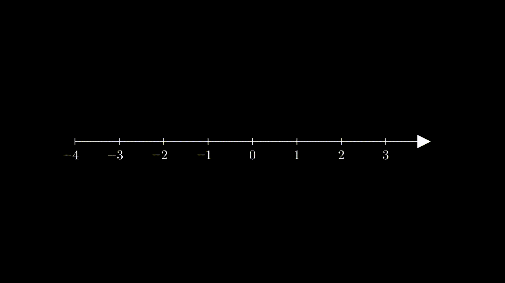

So the derivative of a complex-valued function $g$ at $z_0$ is the complex number approached by $\frac{\Delta{g}}{\Delta{z}}$ as $\Delta{z} \rightarrow 0$. With this in mind, we should note that the derivative of a function $g$ need not exist at $z_0$.
To see why, consider the classic example of $f:\mathbb{R} \rightarrow \mathbb{R}$ by $f(x) = |x|$. As before, we'll position $x_0$ at $0$ and think about what happens to $\frac{\Delta{f}}{\Delta{x}}$ as $x \rightarrow 0$.

No matter how much we zoom in on $x_0 = 0$ the ratio $\frac{\Delta{f}}{\Delta{x}}$ does not approach a constant in the surrounding region. Try zooming in for yourself below: we always have $\frac{\Delta{f}}{\Delta{x}} = -1$ to the left of $x_0 = 0$, and $\frac{\Delta{f}}{\Delta{x}} = +1$ to the right.
Thus, for a function $f: \mathbb{R} \rightarrow \mathbb{R}$ to be differentiable at $x_0$, we must have that $\frac{\Delta{f}}{\Delta{x}}$ is approximately equal, whether we take $x = x_0 + \varepsilon$ or $x = x_0 - \varepsilon$ (for small $\varepsilon > 0$).
In $\mathbb{C}$, a similar constraint applies. Let $z \longleftrightarrow (x, y)$ with $x = \text{Re}(z)$ and $y = \text{Im}(z)$.